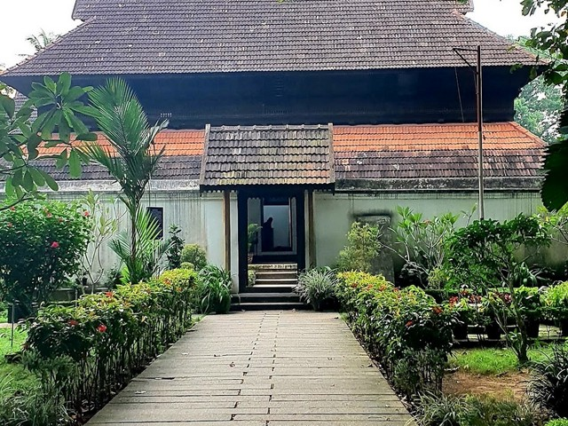

Ambalapuzha Temple
Ambalappuzha Sree Krishna Swamy Temple is an Indian Hindu temple dedicated to Krishna at Ambalappuzha in Alappuzha district of Kerala.Why is Ambalapuzha temple famous Aside being one of the seven greatest Vaishnava temples in Travancore, the Ambalapuzha Sree Krishna Temple is also known to have been built and designed in the best and typical Kerala architectural style, exhibiting beautiful paintings of various avatars of Lord Vishnu (a major centerpiece attraction for devotees).The temple is believed to have been built during 15th century AD by the local ruler Chembakasserry Pooradam Thirunal-Devanarayanan Thampuran. It is one of the seven greatest temples in Travancore. It is considered one among the 108 Abhimana Kshethram of Vaishnavate tradition.
Mannarashala Temple
Mannarasala Sree Nagaraja Temple located near Harippad in Alappuzha district of Kerala is a serpent shrine under the patronage of a brahmin family. The Mannarasala Temple has over 100,000 images of snakes along the paths and among the trees, and is the largest such temple in Kerala, India. Couples seeking fertility come to worship here, and upon the birth of their child come to hold thanksgiving ceremonies here, often bringing new snake images as offerings.
Krishnapuram Palace

The Krishnapuram Palace is a palace and museum located in Kayamkulam near Alappuzha in Alappuzha district, Kerala in southwestern India.The Krishnapuram Palace is a palace and museum that is located in Kayamkulam, at a distance of 47 km from Alappuzha. This magnificent palace was built during the reign of a Travancore King, Anizham Thirunal Marthanda Varma and is well known for its mural paintings and architecture.